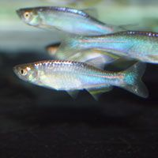

Danio albolineatus – Színjátszó dánió
Tulajdonságai
Ugrálós természetű.
Szaporodása
Szaporítható.
Tápláláléka
Mindenevő.
Igényei
Semmi különös.
Élettartam
2-5 év
Kifejlett példány hossza
5 cm
Ára
~550 Ft/db
Irány a bolt->

Vissza a Főoldalra
Vissza az oldal tetejére